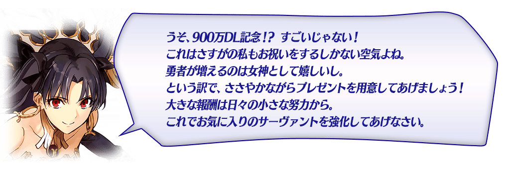
◆活動舉辦期間◆
2017年5月24日(三)16:00～6月2日(五) 15:59
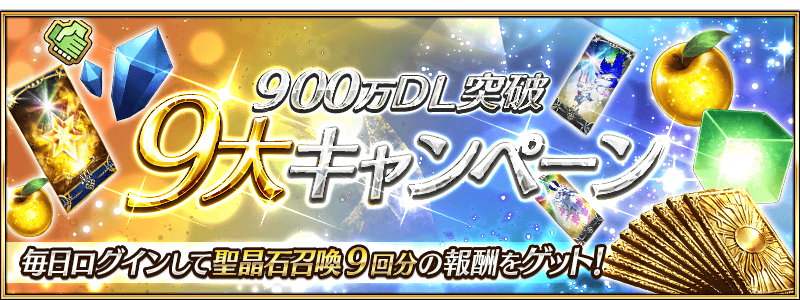
在下列期間中，9日內連續登入就贈送呼符9張等豪華報酬！
全部領取的話能拿到聖晶石召喚(稀有召喚)9次份的報酬！
◆舉辦期間◆
|
2017年5月25日(四) AM3:00～6月3日(六) AM2:59 |
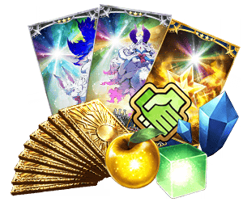 |
| 連続登入天數 | 贈送內容 | |
|---|---|---|
| 第1天 | 900萬QP | 呼符 1枚 |
| 第2天 | 友情點數 90,000pt | 呼符 1枚 |
| 第3天 | 赤銅の果実 9個 | 呼符 1枚 |
| 第4天 | 叡智的猛火 ALL★4(SR) 9枚 | 呼符 1枚 |
| 第5天 | 白銀の果実 9個 | 呼符 1枚 |
| 第6天 | 英靈結晶・太陽のフォウくんALL★3(ATK) 9枚 | 呼符 1枚 |
| 第7天 | 英靈結晶・星のフォウくんALL★3(HP) 9枚 | 呼符 1枚 |
| 第8天 | 黄金の果実 9個 | 呼符 1枚 |
| 第9天 | 魔力稜鏡 90個 | 呼符 1枚 |
以期間限定在達文西工房的「魔力稜鏡交換」再追加1套經驗值卡套組。
※追加的經驗值卡套組是與平常同樣內容。1套組可以最多可以用40魔力稜鏡交換5次。
◆追加道具◆
|
叡智の猛火 ALL★4(SR)10枚套組 最大5組(計50枚) ◆交換期間◆ 2017年5月24日(三)16:00～5月31日(三)22:59 |
 |
在進行Servant及概念禮裝的強化時，大成功(經驗值2倍加成)・極大成功(經驗值3倍加成)發生機率以期間限定變成2倍。
無論如何藉此機會強化中意的Servant和概念禮裝吧！
◆舉辦期間◆
2017年5月24日(三) 16:00～6月7日(三) 15:59
連續登入獎勵小翻新！
每日能得到的「虚影の塵」變更成「愚者の鎖」。
◆翻新時間◆
2017年5月25日(四) AM3:00～
※就算是翻新日，連續登入獎勵也不會重置。
會繼承舊登入獎勵的經過天數計算。
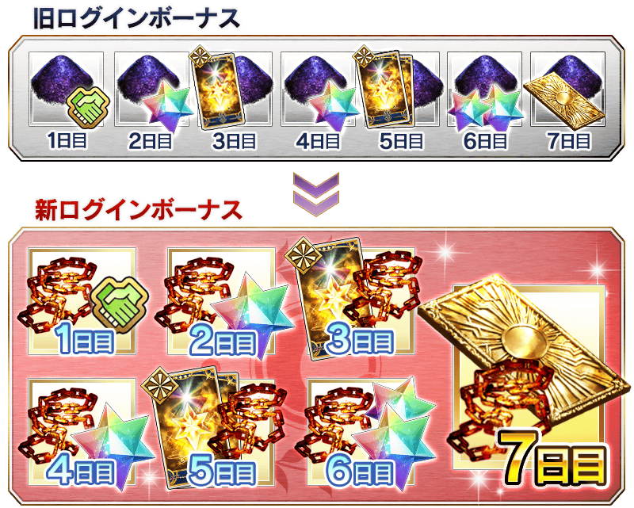
可在每週更新的常設任務「Master任務」獲得的聖晶片，以期間限定變更成現在數量的2倍。
因此，每通過一個任務4個，通過全部任務通過的話能獲得最多28個(聖晶石4個份)的聖晶片。
◆舉辦期間◆
2017年5月28日(日) 23:00～6月4日(日) 22:59
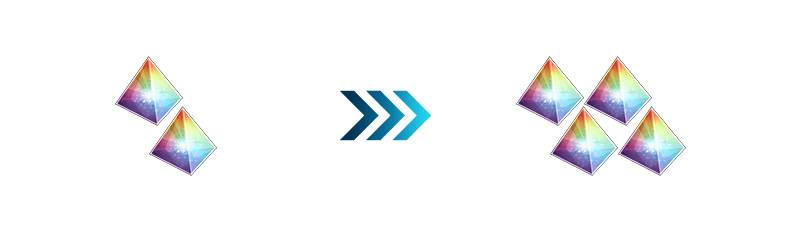
※會從2017年5月28日(日) 23:00更新的Master任務變更報酬的個數。
另外，現在舉辦中(2017年5月21日(日)更新)的Master任務報酬在5月28日(日)以後領取仍為個數變更以前的個數。
期間中，在關卡開始時的支援選擇畫面中，在支援選擇其他玩家的Servant與其他玩家選擇自己的Servant支援時的友情點數獲得量變成2倍。
思考Servant及概念禮裝的編成，讓好友及其他玩家選擇當支援，藉此機會入手更多友情點數吧！
◆舉辦期間◆
|
2017年5月24日(三) 16:00～6月2日(五) 15:59 |
 |
容易取得特定的技能強化＆靈基再臨素材高難易度關卡，舉辦「狩獵關卡」！
特定的敵人做為對象狩獵關卡依序在迦勒底之門出現。
詳情請確認此處的公告。
◆舉辦期間◆
2017年5月24日(三) 23:00～5月31日(三) 11:59
舉辦強化Servant能力的特別關卡「Servant強化關卡」！
這次做為第6彈，對象合計7位Servant。
詳情請確認此處的公告。
◆舉辦期間◆
2017年5月24日(三) 23:00～
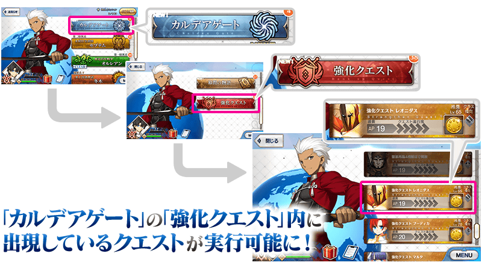
※即使是已開放強化關卡的Servant，未持有做為對象Servant的話，關卡就不會出現。
全部的Servant強化關卡的AP消費以期間限定變成1/2！
◆舉辦期間◆
2017年5月24日(三) 16:00～6月2日(五) 15:59
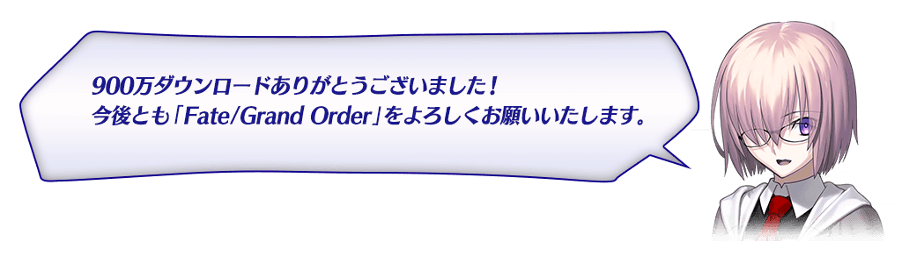

◆「900萬DL記念Pick Up召喚」期間◆
期間：2017年5月24日(三) 16:00～6月7日(三) 15:59
以期間限定舉辦「900萬DL記念Pick Up召喚(每日交替)」！
為了紀念900萬DL突破，「★5(SSR)伊絲塔」以期間限定登場！
這次包含上述，對象3位的Servant以每日交替Pick Up！
對象的★5(SSR)Servant「★5(SSR)伊絲塔」「★5(SSR)俄里翁」「★5(SSR)魁札爾・科亞特爾」出現機率提升！
另外，期間中「★4(SR)美杜莎(Lancer)」「★4(SR)絲西娜」「★4(SR)戈爾貢」「★3(R)尤瑞艾莉」「★3(R)豹人」「★3(R)美杜莎(Rider)」常駐Pick Up！
詳情請在聖晶石召喚畫面左下的召喚詳細確認。
※伊絲塔在Pick Up期間結束後，不會追加到故事召喚。
※Pick Up期間中、魁札爾・科亞特爾、戈爾貢、豹人在章節通過前也能入手。
| 每日交替Pick Up期間 | 每日交替Pick Up内容 |
|---|---|
| 5/24(三) 16:00～5/26(五) 22:59 | 伊絲塔 |
| 5/26(五) 23:00～5/27(六) 22:59 | 俄里翁 |
| 5/27(六) 23:00～5/28(日) 22:59 | 魁札爾・科亞特爾 |
| 5/28(日) 23:00～5/29(一) 22:59 | 伊絲塔、俄里翁 |
| 5/29(一) 23:00～5/30(二) 22:59 | 伊絲塔、魁札爾・科亞特爾 |
| 5/30(二) 23:00～5/31(三) 22:59 | 伊絲塔、俄里翁、魁札爾・科亞特爾 |
| 5/31(三) 23:00～6/3(六) 22:59 | 伊絲塔 |
| 6/3(六) 23:00～6/4(日) 22:59 | 伊絲塔、俄里翁 |
| 6/4(日) 23:00～6/5(一) 22:59 | 伊絲塔、魁札爾・科亞特爾 |
| 6/5(一) 23:00～6/6(二) 22:59 | 伊絲塔、俄里翁、魁札爾・科亞特爾 |
| 6/6(二) 23:00～6/7(三) 15:59 | 伊絲塔 |
※請注意會以每日交替變更Pick Up的Servant。
※關於美杜莎(Lancer)、絲西娜、戈爾貢、尤瑞艾莉、豹人、美杜莎(Rider)，在本Pick Up期間中為常駐Pick Up的對象。
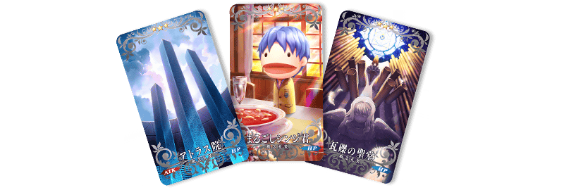
並且，★3(R)概念禮裝的陣容一部份翻新！
「★3(R)瓦礫の聖堂」「★3(R)アトラス院」「★3(R)まるごしシンジ君」先行新登場！
※伴隨著翻新，「★3(R)魔力計」「★3(R)モータード・キュイラッシェ」「★3(R)シュトルヒリッター｣不再是Pick Up召喚的召喚對象。另外，仍可在故事召喚獲得。
※「★3(R)瓦礫の聖堂」「★3(R)アトラス院」「★3(R)まるごしシンジ君」從Pick Up召喚舉辦期間結束後的2017年6月7日(三) 16:00追加到故事召喚。
※「★3(R)魔力計」「★3(R)モータード・キュイラッシェ」「★3(R)シュトルヒリッター｣從2017年6月7日(三) 16:00不再是故事召喚的召喚對象，追加到友情點數召喚。
Pick Up期間中，期間限定Servant、Pick Up Servant的出現機率提升！
10次召喚中確定1張★4(SR)以上和確定1位★3(R)以上的Servant！
※確定★4(SR)以上包含Servant和概念禮裝。
※所謂「出現機率提升」意指比同稀有度的Servant及概念禮裝出現機率更高的設定。
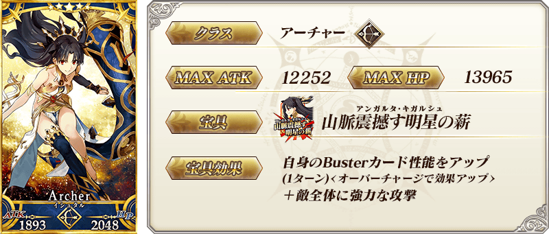
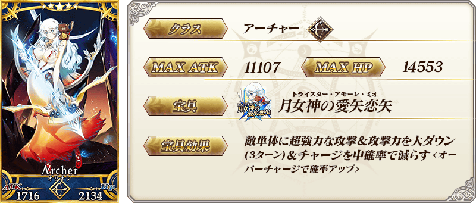
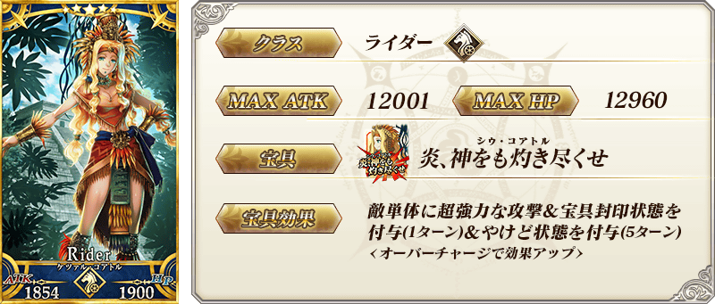
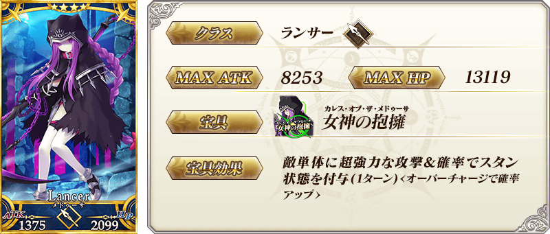
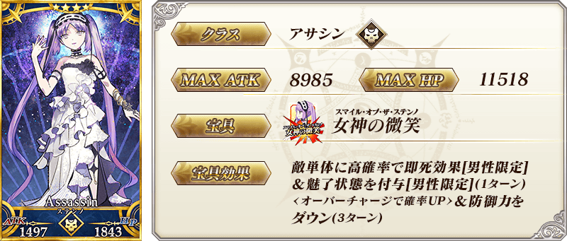
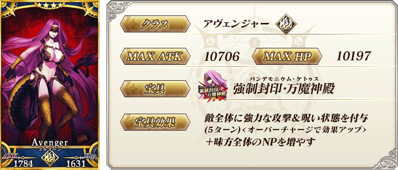
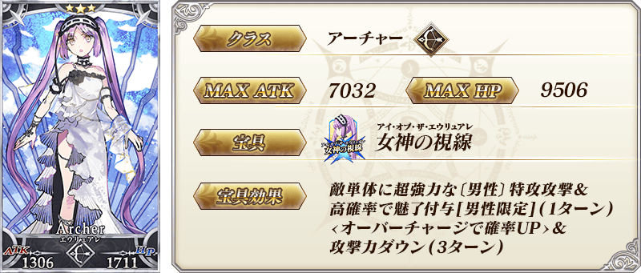
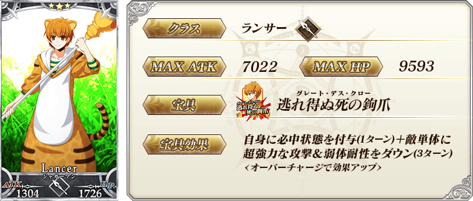
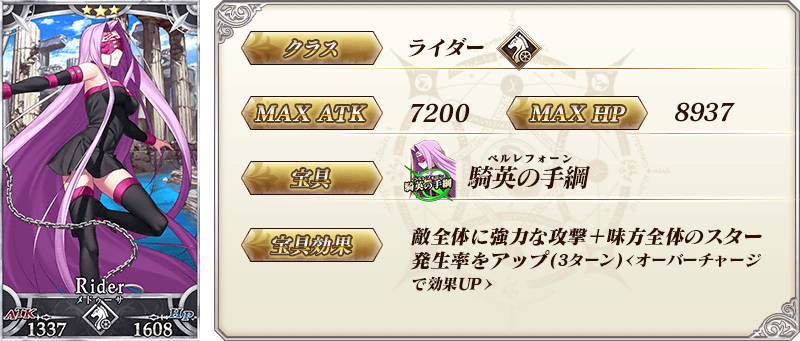
| 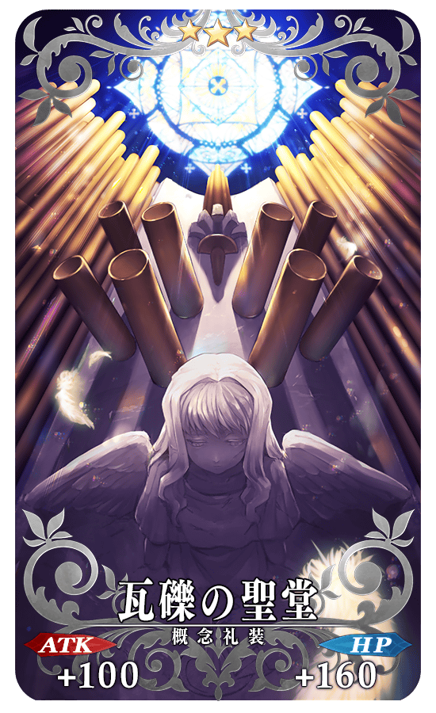 |
★★★R |
| 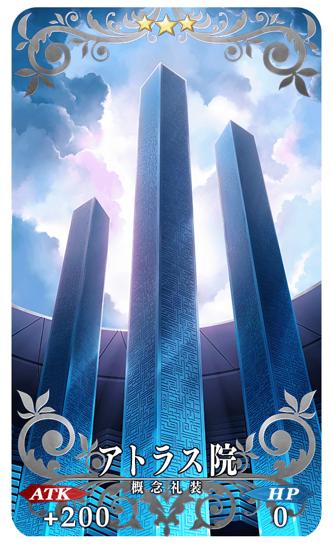 |
★★★R |
| 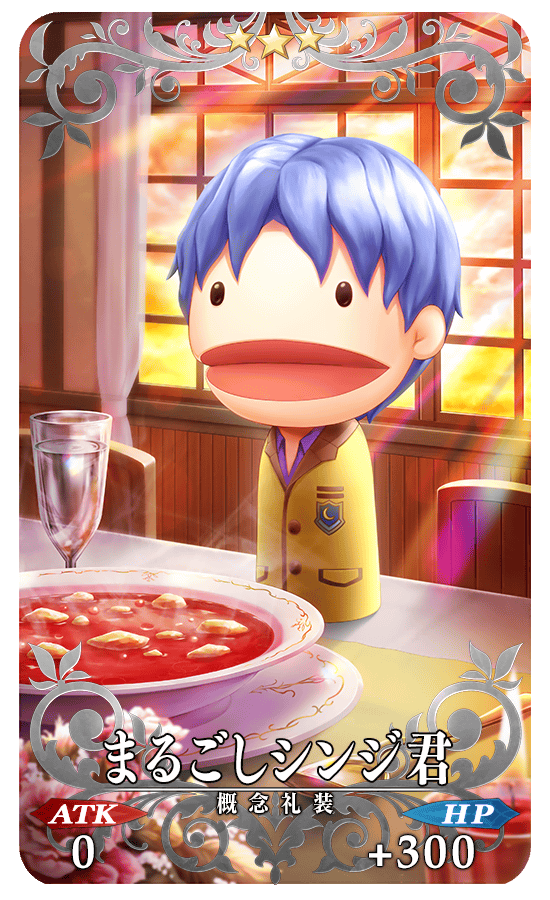 |
★★★R |
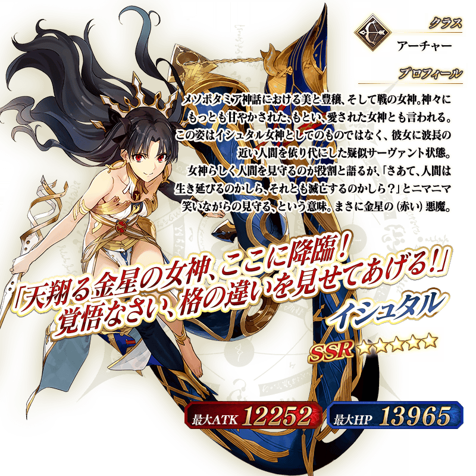
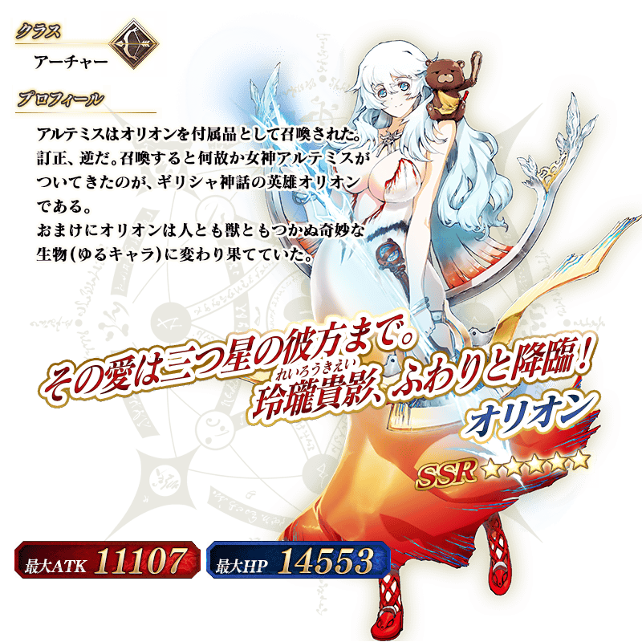
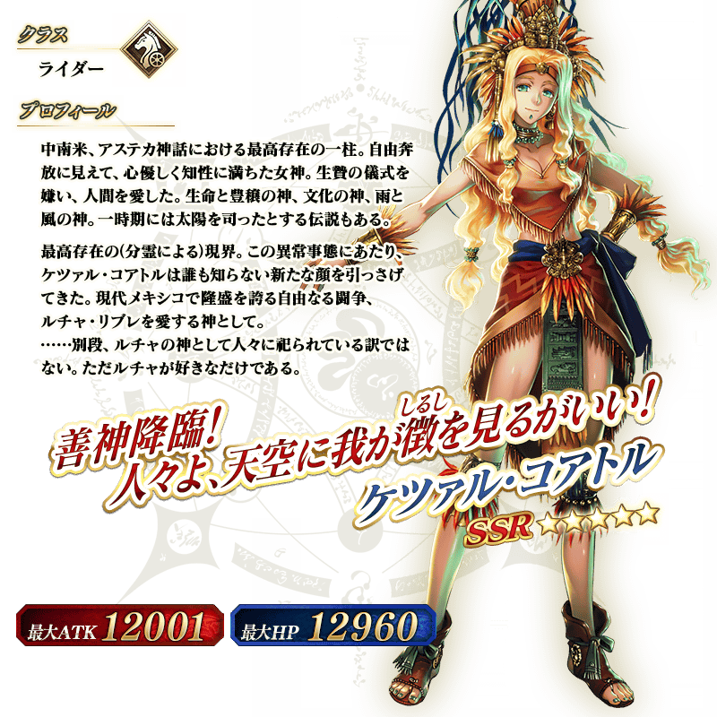